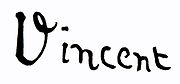

梵谷Van Gogh
梵谷Van Gogh
梵谷（荷蘭語：Vincent Willem van Gogh，粵語：梵高，1853年3月30日－1890年7月29日），荷蘭後印象派畫家。他是表現主義的先驅，並深深影響了二十世紀藝術，尤其是野獸派與德國表現主義。梵谷的作品，如《星夜》、《向日葵》、《有烏鴉的麥田》等，現已躋身於全球最具名、廣為人知的藝術作品的行列。他在2004年票選最偉大的荷蘭人當中，排名第十，次於第九偉大的17世紀畫家倫勃朗。
1861年梵谷開始受教育，在學習語言包括法語、德語及英語表現不錯，但在1868年3月中斷學業，並在1869年7月在國際藝術品交易商公司見習。經歷了短暫的教職生涯後，他成為傳教士，向貧困的採礦工人傳教。直到大約27歲時，梵谷才開始了他的畫家生涯；然而，在他生前的最後十年間，卻創作了超過二千幅畫，包括約900幅油畫與1100幅素描。梵谷早期只以灰暗色系進行創作，直到他在巴黎遇見了印象派與新印象派。梵谷融入了他們的鮮豔色彩與畫風，創造了他獨特的個人畫風，尤其在梵谷待在法國亞爾的那段時間，發展已臻成熟。他最著名的作品多半是他在生前最後二年創作的，期間梵谷深陷於精神疾病中，其最後在他37歲那年將他導向自殺一途。
梵谷一生中的核心人物是他的弟弟西奧，其從不間斷、無私的提供梵谷經濟資助。有種說法是梵谷生前出售的畫作《紅色的葡萄園》也是由他的弟弟拜託友人購得。他們終身的友誼可於他們在1872年8月前往來的多封書信間查證。
梵谷簽名
